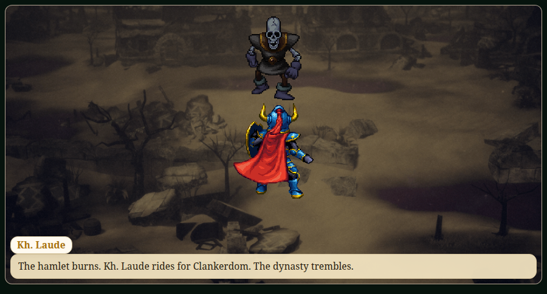
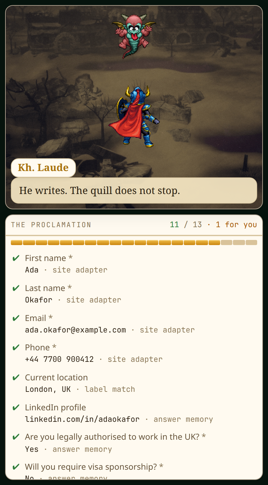
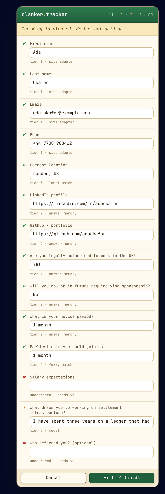
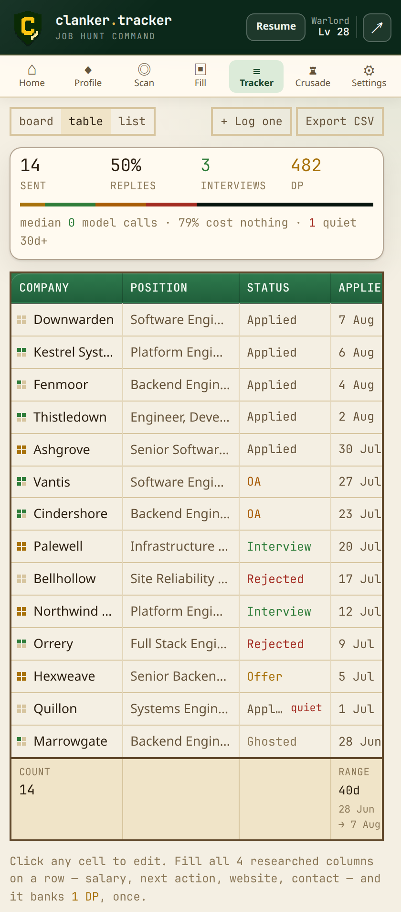
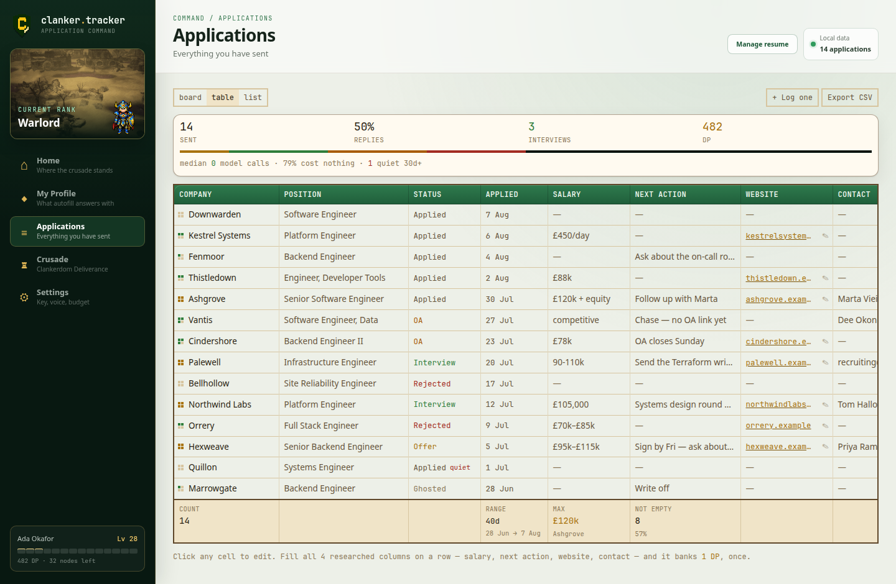
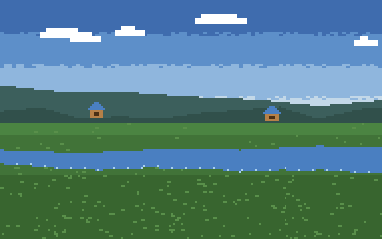
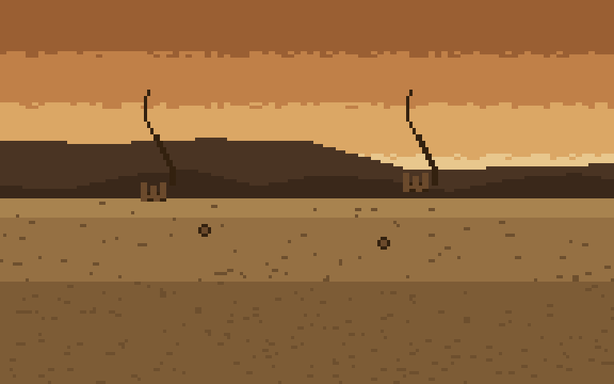
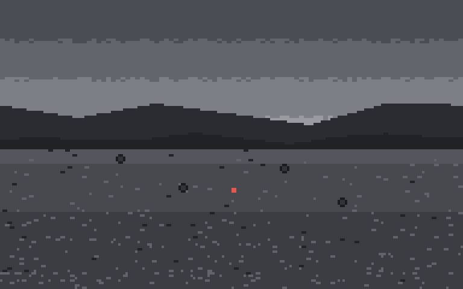
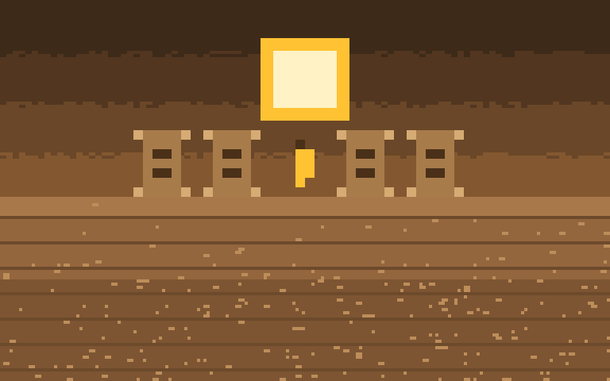

Apply to a lot of jobs.
Then go raze a village.
A local-first Chrome extension that parses your resume, scans it against the posting, fills the application in one click, and logs what it cost — wrapped in an idle RPG about being the villain of somebody else’s story.
No account No server No telemetry Median application: 0 model calls

- ParseDrop a PDF. It never leaves your machine.
- ScanEvery requirement mapped to your evidence, or named as a gap.
- FillAny application form, in one click, on five tiers of cheapest-first.
- WriteA cover letter that may only claim what the scan found evidence for.
- TrackA board and a spreadsheet over one store. CSV out, any time.
- CrusadeEvery application razes two family homes. It adds up.
An application is not one action. The extension ships the middle of this queue today; the account-wall classifier and ordered controller are tested, but not yet connected to the live fill run:
account ─▶ fill ─▶ cover letter ─▶ confirm ─▶ sent, logged, banked
│ │ ▲
└─ blocked └─ only if └─ nothing is ever sent
without a yes it asks without this
Two edges carry the intended design. A confirmation wall outranks everything — hammering the form behind it is how an address gets rate-limited. And fields the resolver handed back block the send: refusing to invent a salary expectation is the tool working, and submitting over that empty box would throw the refusal away. Today, account walls and final submission remain manual.
The engineering claim is that the median application costs zero model calls. Field resolution runs a chain, cheapest first, and only escalates on a miss.
| Tier | How | Cost | Typical hit rate |
|---|---|---|---|
| 1 | Site adapter & autocomplete | free | ~55% |
| 2 | Answer memory — what you accepted last time | free | ~25% |
| 3 | Label table | free | ~10% |
| 4 | Fuzzy bigram match | free | ~5% |
| 5 | One batched model call, for whatever is left | paid | ~5% |
Tier 2 is why it gets cheaper the more you use it: every field you accept or correct is written back, so the hit rate climbs as the pile grows. And every row in the review overlay says which tier answered it, so the cost of an application is visible at the moment you approve it rather than asserted on a landing page.




You are Sir Khums Alaude — excellent handwriting, no dental coverage — commissioned by a king who never leaves his tower to destroy a dynasty that turns out to be poor people. Somewhere around the tenth village you notice. In the cleared ground rise new data centres, cooled by the river you dried.
Every point comes from a real action. No daily bonus, no energy timer, no streak. If you didn’t apply, you didn’t earn — the moment this is fun without the job hunt, it has failed. And nothing decays: step away for a month and the warband makes camp.
- SquireA hamlet still standing

Knight-ErrantThe river, before it was dried
WarlordA town already taken
DevastatorThe colour of nothing
AscendantA room you were let into
These images are the installed files under public/Sprites, read through the same asset seam in scenes, title cards, acts and dashboards. A fresh public clone falls back to the deterministic in-code art. The installed pack is not in the published release; its provenance must be cleared before redistribution.
git clone https://github.com/bananatruck/clanker.tracker cd clanker.tracker pnpm install pnpm build
Then, because Chrome now insists you do it by hand:
chrome://extensions- Turn on Developer mode
- Load unpacked → pick
.output/chrome-mv3
No environment file or clanker account is required. A clean clone builds with the complete procedural fallback; a working copy with public/Sprites builds with that installed art. The current suite has 553 passing tests.
- Your resume is parsed on your machine and stored in IndexedDB. It is never uploaded.
- There is no backend, no account, and no analytics of any kind.
- The only network call the extension can make is to your own model provider, with your own key, and only when a field genuinely could not be resolved for free.
- Keys and sign-in details live in
chrome.storage.local, never in the database — the separation needed for a future credential-free database export. Import/export itself is not built yet. - It is MIT, and the whole thing is readable in an afternoon.